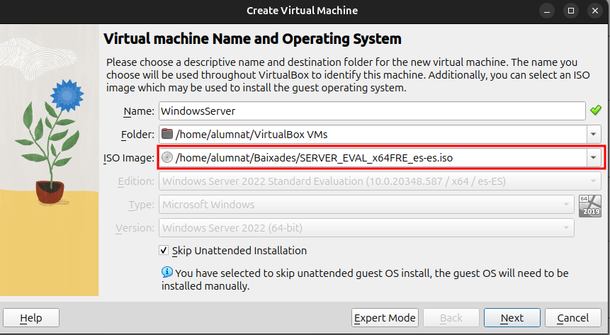
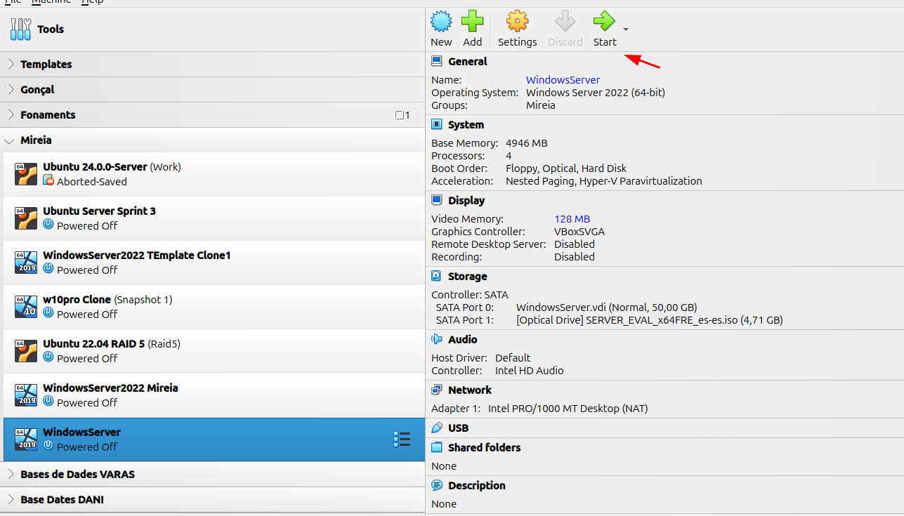
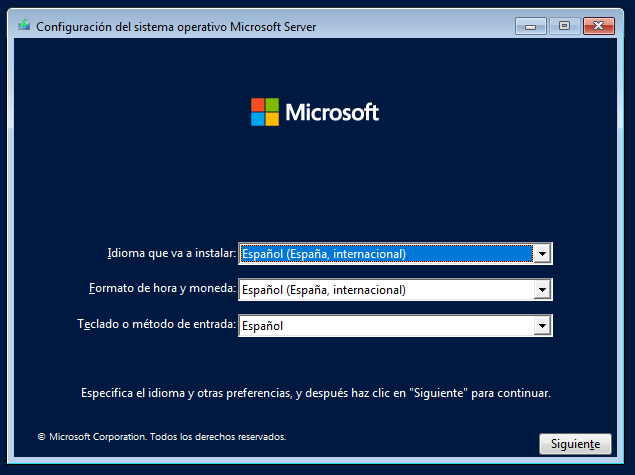
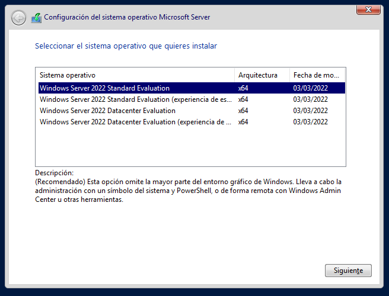
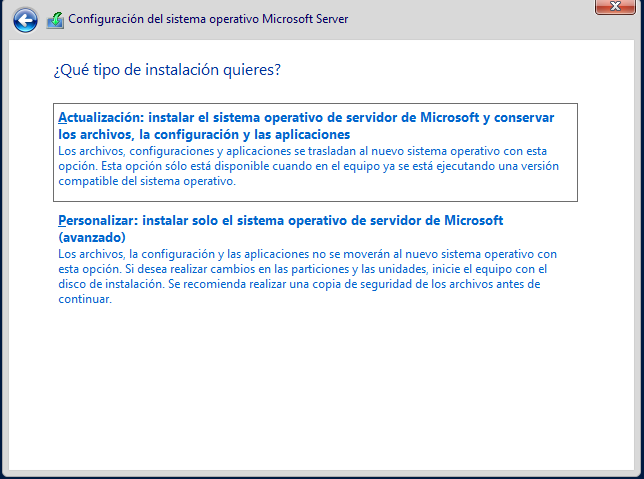
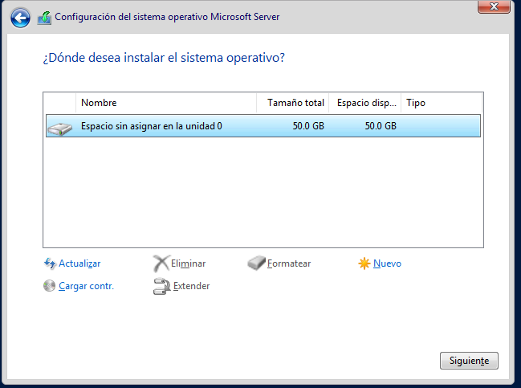
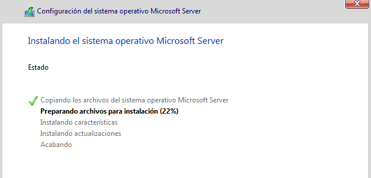
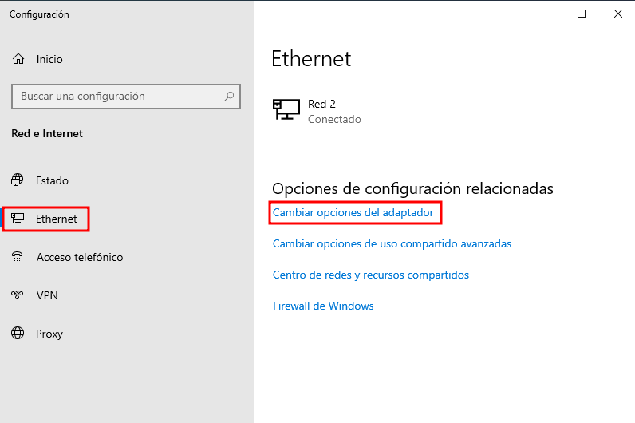
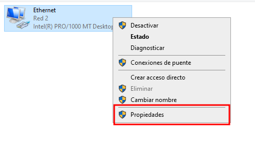
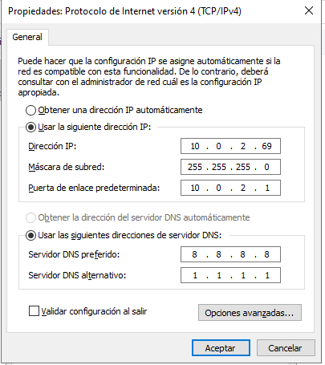

Windows Server
Què és Windows Server?
Windows Server és un sistema operatiu desenvolupat per Microsoft dissenyat per a la gestió de servidors. A diferència de les versions d'escriptori de Windows, est optimitzat per oferir serveis de xarxa, allotjament de bases de dades, administració d'usuaris, gestió de dominis, i altres funcions crítiques per a entorns empresarials i corporatius.
Per a què s'utilitza?
Windows Server s'utilitza en empreses i entorns professionals per proporcionar serveis com:
- Control de dominis amb Active Directory
- Servidor de fitxers i impressió
- Serveis web (IIS)
- Virtualització amb Hyper-V
- Allotjament de bases de dades
- Administració de xarxes i seguretat
Cost i llicència
Windows Server no és un sistema operatiu gratuït. Microsoft ofereix diferents edicions amb llicències de pagament segons les necessitats de l'empresa. Existeixen edicions com Standard, Datacenter i Essentials, cadascuna amb característiques i preus diferents. No obstant això, es pot obtenir una versió de prova limitada en temps per a proves i aprenentatge.
Instal·lació de Windows Server en VirtualBox
Aquest apartat explica els passos per instal·lar Windows Server en una mquina virtual amb VirtualBox.
Creació de la Mquina Virtual
- Feu clic a "New" per començar la creació de la mquina virtual.
- Afegiu el nom a la mquina virtual.
- Inseriu la ISO de Windows Server.
- Feu clic a "Skip unattended installation" per procedir amb una instal·lació manual.

Configuració de Recursos
- Escolliu la quantitat de RAM i les CPU virtuals o threads que assignareu a la mquina.
- Deixeu les altres opcions amb els valors per defecte.

Inici de la Instal·lació
- Un cop creada la mquina, feu clic a "Start" per iniciar-la i començar la instal·lació del servidor.

Selecció de la Configuració Inicial
- A la primera pestanya, seleccioneu l'idioma, el format de l'hora, la moneda i el teclat.
- Feu clic a "Siguiente" (Següent) i després a "Install" per continuar.

Elecció de la Versió del Sistema Operatiu
- A la pestanya següent, seleccioneu la versió del sistema operatiu que voleu instal·lar.
- Escolliu la versió desitjada i feu clic a "Siguiente".
- La versió "Standar Evaluation" és sense GUI, has de seleccionar la "Experiancia con GUI" que és l'opció número dos.

Tipus d'Instal·lació
- Seleccioneu l'opció "Personalitzada" per realitzar una instal·lació manual.

Selecció del Disc d'Instal·lació
- Seleccioneu el disc on voleu instal·lar Windows.
- Si disposeu de diversos discs, assegureu-vos de triar el correcte.

Finalització del Procés
- Espereu mentre es completa el procés d'instal·lació.

- Un cop s'ha completat la instal·lació de Windows Server, el següent pas és seguir les instruccions que apareixen a la pantalla. Això inclou configurar el nom d'usuari i ajustar altres opcions per personalitzar el sistema segons les teves necessitats.
IP Fixa al Servidor
s important configurar una IP fixa al servidor per evitar que canviï cada cop que s'encén. Això garanteix que:
- Els clients i dispositius de la xarxa sempre puguin trobar el servidor a la mateixa adreça IP.
- Es puguin configurar serveis com Active Directory, DNS, DHCP, impressió en xarxa o compartició de fitxers de manera estable i fiable.
- Es pugui fer administració remota, redirecció de ports al router o configuració de tallafocs sense problemes.
Com assignar una IP fixa al servidor (GUI de Windows)
- Obrim la configuració de xarxa
- Aneu a
Configuració > Xarxa i Internet > Ethernet. - Cliqueu a "Canviar opcions de l'adaptador".

- Obrim les propietats del nostre adaptador de xarxa
- Feu clic dret sobre l'adaptador Ethernet i seleccioneu "Propietats".

- Configurem la IP manualment
- Seleccionem Protocol d'Internet versió 4 (TCP/IPv4) i cliquem a "Propietats".
- Marquem l'opció "Utilitzar la següent adreça IP" i hi introduïm:
- Adreça IP fixa (ex:
192.168.1.100) - Mscara de subxarxa (ex:
255.255.255.0) - Porta d'enllaç predeterminada (ex:
192.168.1.1) - DNS preferit i alternatiu (ex:
1.1.1.1i8.8.8.8)
- Adreça IP fixa (ex:

- Comprovem que s'ha aplicat correctament
-
Obrim la consola CMD i escrivim:
bash ipconfig -
Verifiquem que apareix la IP que hem assignat.

Per què és important tenir una IP fixa?
- Estabilitat de la xarxa: serveis com DNS, RDP, FTP o compartició de fitxers requereixen que ladreça IP del servidor sigui constant.
- Evita errors: si lIP canvia, els usuaris podrien perdre la connexió al servidor o accedir a un altre dispositiu incorrectament.
- Configuracions avançades: el redireccionament de ports al router o tallafocs necessita conèixer ladreça IP exacta.
Si sutilitza DHCP, es pot reservar una IP per MAC al servidor DHCP, però per servidors és millor una IP esttica manual per seguretat i control.